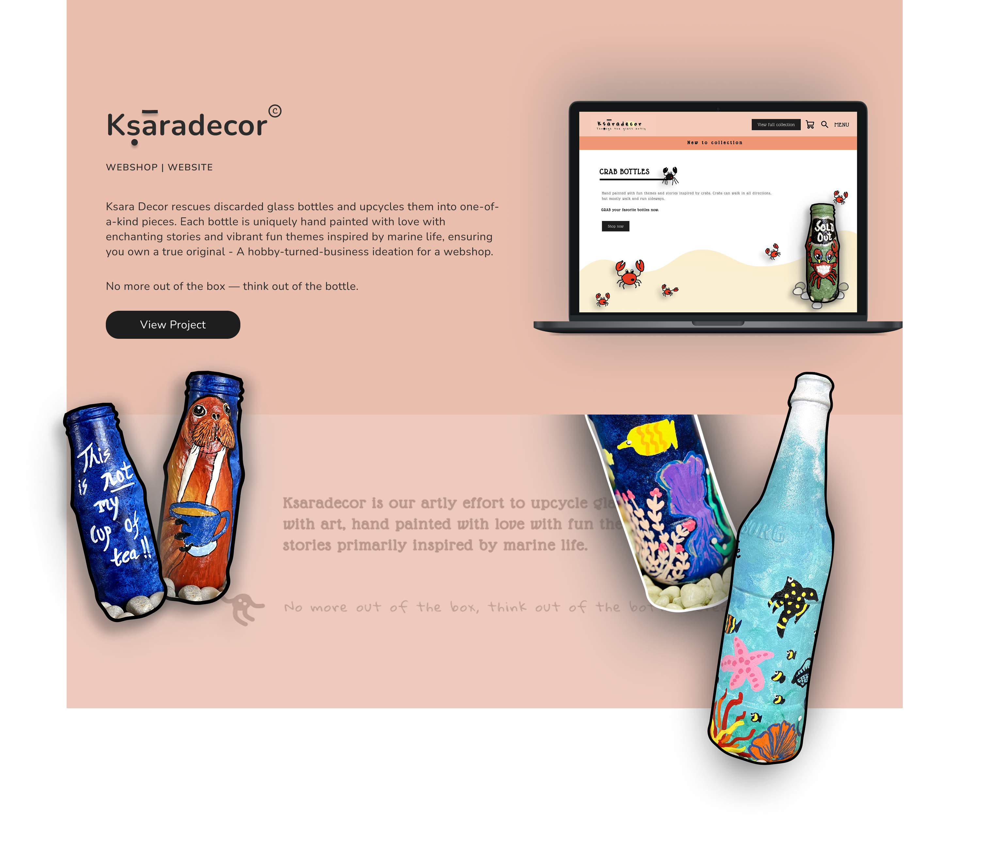
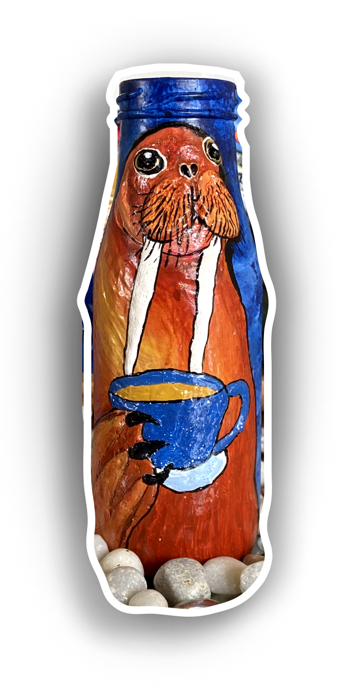
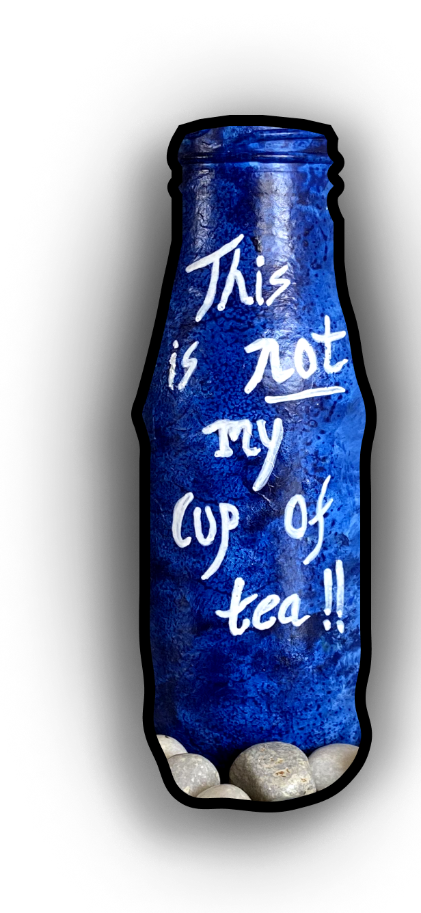

Ksaradecor upcycles glass bottles with hand-painted marine-inspired art — fun, one-of-a-kind pieces painted with love. A hobby-turned-business ideation for a webshop to sell these bottles online.
No more out of the box — think out of the bottle.
Bottle Art

